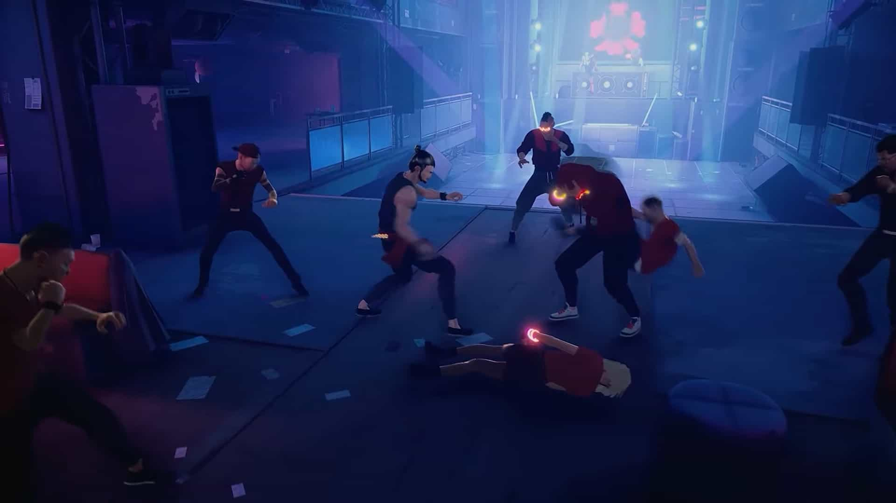
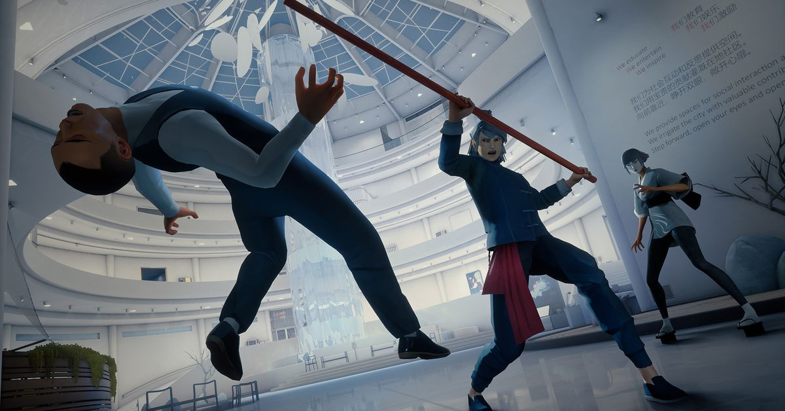
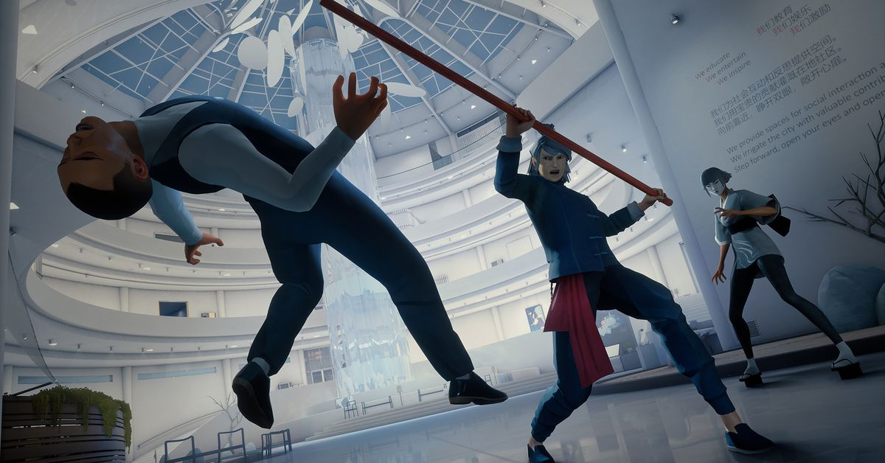

Sifu
Synopsis:
Is one life enough to have Kung Fu?
Sifu is the story of a young Kung Fu student on a path of revenge, hunting for the murderers of his family. One against all, he has no allies, and countless enemies.
He has to rely on his unique mastery of Kung Fu as well as a mysterious pendant to prevail, and preserve his family’s legacy.
On the path of vengeance:
The hunt for your enemies will take you through the hidden corners of the city, from the gang-ridden suburbs to the cold hallways of the corporate towers.
You have got one day, and countless enemies on your way. For every mistake, time will be the price to pay.
Adaptation is the way:
Careful positioning and clever use of the environment to your advantage are key to your survival.
Use everything at your disposal: throwable objects, makeshift weapons, windows and ledges… The odds are stacked against you, and you will be offered no mercy.
Training never ends:
Kung Fu is mastery through practice, a path for both the body and the mind. Learn from your errors, unlock unique skills, and find the strength within yourself to master the devastating techniques of Pak-Mei Kung-Fu.
Screenshots:
 
